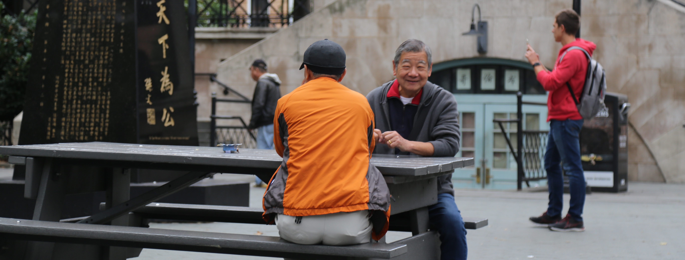
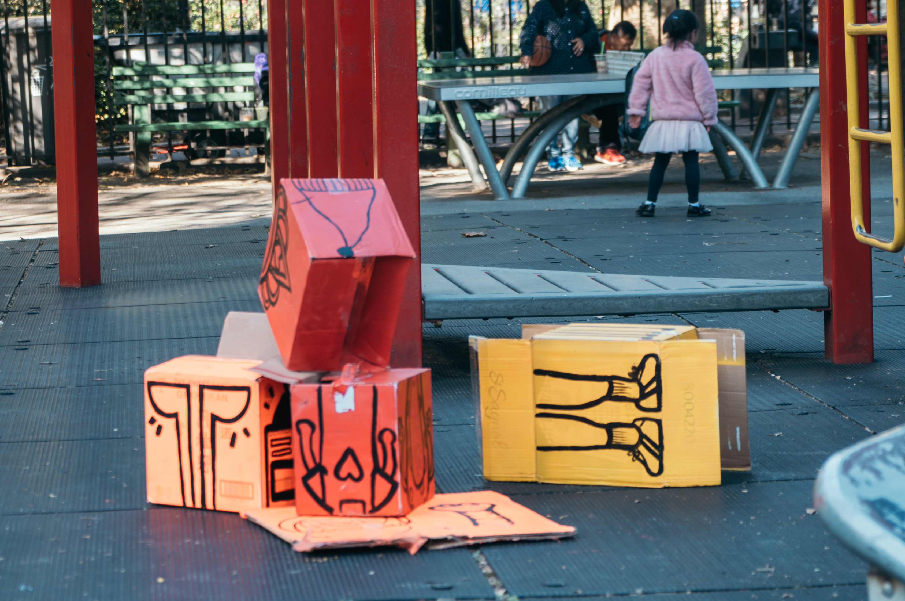
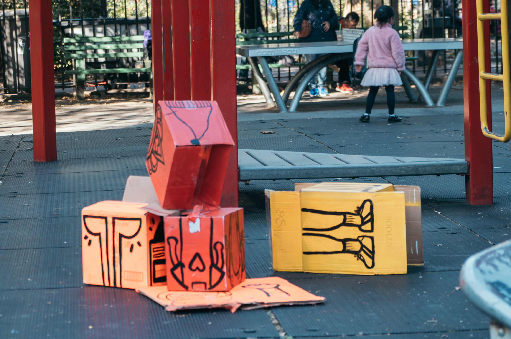

Instruction Sets for Strangers was a four week long project in which we had to choose a location in New York City and create three site-specific interventions that would encourage interaction without written or verbal instructions.
Cierra King, Me, Vic Yuen, and Esther Nam
We worked collaboratively on almost all parts of the project: from research, ideation and construction, to setup and observation. Vic Yuen did most of the documentation.
Graphic by Esther Nam
We created ashtrays made from aluminum cans and velcroed them onto tables.
While scoping out the park, we noticed that there were an extraordinary amount of cigarette butts littering the ground.
We got to the park on a Sunday when it opened at 7:30 am so as to be as unintrusive as possible.
We set up in the upper portion of the park where it was predominantly older people playing cards or board games.
One of our ashtrays with a cigarette we found on the ground placed into it as a shill.


People did not interact with our ashtrays as we had hoped. Thinking they were trash, or not liking an intrusion on their routine, they slapped them off of each and every table.
We painted boxes to make building blocks for kids. We also brought a ball that they could use to knock them all down.
We decided that kids would be more willing to interact with anything we placed in the park. The older people seemed content with their routine.
We set the blocks up at around 10:30 am on a Saturday.
We set up in the playground in the lower portion of the park. An area more frequented by kids and their parents.
The kids stacked the blocks up as high as they could.


The kids swarmed around us as we set them down and played with them for over two hours straight, building with them, knocking them over, throwing them at each other, and eventually when they opened up, they would crawl into them. They avoided the ball for the most part.
An iteration on Intervention #2, we painted boxes and made exquisite corpse style designs on them.
To try and guide the way in which the kids interacted with them a little more this time.
We set the blocks up at around 2:30 pm on a Saturday.
We set up in the playground in the lower portion of the park again.
An exquisite corpse building block set.

 

When we set up the blocks this time, the kids were a bit older and more violent. They were unsure at first about whether or not they were allowed to touch the boxes, but then started interacting with them. They opted to flip the boxes on top of each other trying to form a structure, and then they decided to try and destroy them. They threw them on the ground, at each other, and hit them with bats. There was one younger girl who, with the help of her mom, started building a structure in the way we intended.
This project went through a few drastic variations, which were influenced by our first intervention and the user testing that happened as we observed it. We noticed that our target audinece would be fairly tough to influence in terms of breaking their routines. Because we changed to the younger kids we ended up getting more interaction, and being able to document the vast differences.